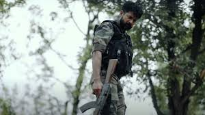
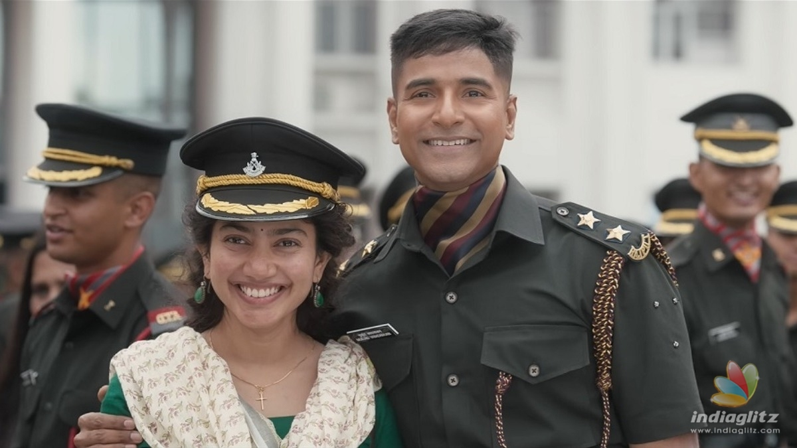

Starring: Sivakarthikeyan, Sai Pallavi
Director: Rajkumar Periasamy
Music director: G. V. Prakash Kumar
Producers: Kamal Haasan, R Mahendran, Mahendran
Language: Tamil
Runtime: 169 minutes
Ratings: 8.5/10
Storyline: A fearless soldier and his spirited lady love face their battles with courage and brave it all out
Technically, Amaran would make for a near-perfect biographical war film but at its heart, it is an endearing love story. Partly fiction and mostly adapted from a segment of ‘India’s Most Fearless: True Stories of Modern Military Heroes’, Amaran journals the lives of Mukund and Indhu from the first time they met at college. Of course, the film follows the template of the tried and tested romance story with everything from meet-cute, convincing the families and entering into wedlock. But the army backdrop, set in the picturesque valleys of Kashmir, makes the film stand apart.
What works in the favour of Amaran is how it stays with its characters instead of dwelling at length on the history and politics behind the territorial conflict over the Kashmir region. We get throwaway lines on how those who are supposed to sit and talk are yet to do it and even a glimpse into the ‘other’ side when militants face losses. From a cinematic standpoint, Amaran, to our pleasant surprise, is more akin to Vaaranam Aayiram than Vishwaroopam. Though our counterparts in the North have a richer history when it comes to the genre of war films, some of the recent Bollywood outings reek of jingoism hastened by hypernationalism and xenophobia. Amaran avoids such pitfalls like an expert soldier manoeuvring across a minefield.
It wouldn’t be an overstatement to call Sivakarthikeyan and Sai Pallavi the pillars that prop up this film. Sivakarthikeyan’s introduction shot featuring a planking competition with two soldiers standing on his back lingers in the mind. More than the physical transformation — which makes him look the best he has ever looked on screen — it’s the restrained performance of Siva that makes it one of his most career-defining roles.In the hands of a less capable actor, the chances of Indhu coming off as a one-dimensional turning the film into a sobfest were painfully high but Sai Pallavi aces it.
If Sivakarthikeyan is the heart of the film, pumping blood that accelerates through our veins during the action sequences, it’s Sai Pallavi who happens to be the soul of Amaran.
Apart from the lead pair, who complement each other well, Geetha Kailasam shines the most as Mukund’s mother. The thoughtful decision to stick to a not-so-familiar cast makes it easier to see them as characters, lending a sense of legitimacy to the story. The lighter moments — like the romance montages or the scenes showcasing the brotherhood within the force, including a sequence where the soldiers discuss their favourite films from Thuppaki to Anbe Sivam — add depth to the characters which may otherwise feel superficial.
With Amaran, Rajkumar Periasamy hits it out of the park once again thanks to a pacy screenplay, marvellous performances and brilliant technical prowess, especially from GV Prakash who, apart from accentuating the mass sequences with rousing music, skillfully uses silence during the poignant moments.
Vijay handed over the ‘thuppaki’ to Sivakarthikeyan in GOAT as a gesture to announce his successor in Tamil cinema, and with Amaran, Sivakarthikeyan shows us that the gun is in safe hands.
Rating: 0